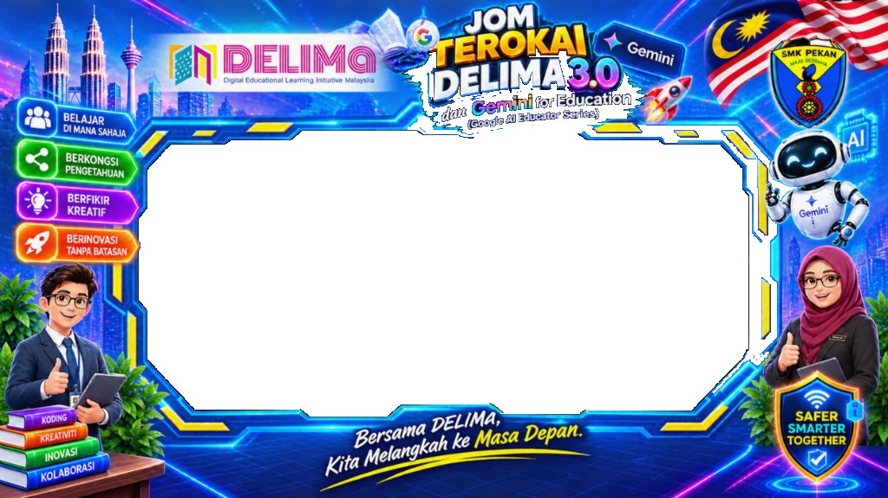

Gambar Berjaya Disimpan! 🎉
*Gambar sepatutnya dimuat turun secara automatik.
📱 Pengguna Telefon: Jika gambar tidak masuk ke galeri, tekan lama pada gambar di atas dan pilih "Save Image".
Peluncuran Delima 3.0 dan Pelaksanaan DCS Daerah Pekan 2026
